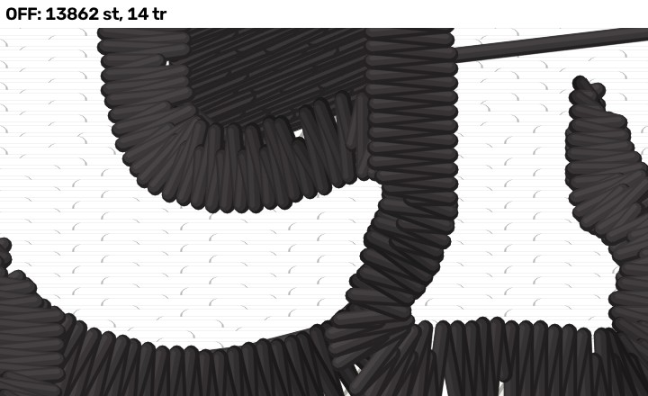
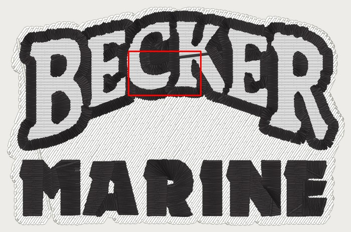

Flip sheet 2026-11-06 — OFF | ON | pro
Layout flags built OFF, each rendered where it changes stitches beside the professional's file for the same job (hat preset at the pro's width). 40 px/mm: a 0.4 mm thread is 16 px. The flips are Kent's.
| flag (PR) | fixture | OFF | ON | pro | needle points changed |
|---|---|---|---|---|---|
fill_one_pass_sections (#1271, LAYOUT) | becker_hat_large | 16,262 st / 11 tr / 1 cc / 2 / 11 | 16,262 st / 11 tr / 1 cc / 2 / 11 | 12,356 st / 10 tr / 4 cc / 1 / 9 | none (no change) |
fill_one_pass_sections (#1271, LAYOUT) | becker_lc_large | 14,830 st / 14 tr / 1 cc / 5 / 14 | 14,830 st / 14 tr / 1 cc / 5 / 14 | 11,274 st / 12 tr / 3 cc / 2 / 11 | none (no change) |
fill_one_pass_sections (#1271, LAYOUT) | becker_hat_small | 10,541 st / 11 tr / 1 cc / 4 / 11 | 10,541 st / 11 tr / 1 cc / 4 / 11 | 8,694 st / 11 tr / 4 cc / 2 / 10 | none (no change) |
fill_one_pass_sections (#1271, LAYOUT) | becker_chest_small | 10,309 st / 11 tr / 1 cc / 4 / 11 | 10,309 st / 11 tr / 1 cc / 4 / 11 | 8,694 st / 12 tr / 3 cc / 2 / 11 | none (no change) |
fill_one_pass_sections (#1271, LAYOUT) | becker_beanie | 13,862 st / 14 tr / 2 cc / 6 / 14 | 13,747 st / 13 tr / 2 cc / 5 / 13 | 11,412 st / 48 tr / 5 cc / 0 / 4 | 377 |
fill_one_pass_sections (PR #1271) LAYOUT
LAYOUT: judged from these renders (Kent 2026-10-22). Sets {"photo_prep_background_removal_timeout_s": 900, "fill_one_pass_sections": true}.
| fixture | engine | OFF | ON | pro | change | travel OFF (mm) | travel ON (mm) |
|---|---|---|---|---|---|---|---|
| becker_hat_large | engine 5777f91c | 16,262 st · 11 tr · 1 cc | 16,262 st · 11 tr · 1 cc | 12,356 st · 10 tr · 4 cc | none | exp 23.1 · bare 0.10/0.00/0.00 · off-body 0.0 | exp 23.1 · bare 0.10/0.00/0.00 · off-body 0.0 |
| becker_lc_large | engine 5777f91c | 14,830 st · 14 tr · 1 cc | 14,830 st · 14 tr · 1 cc | 11,274 st · 12 tr · 3 cc | none | exp 31.1 · bare 0.40/0.20/0.10 · off-body 0.0 | exp 31.1 · bare 0.40/0.20/0.10 · off-body 0.0 |
| becker_hat_small | engine 5777f91c | 10,541 st · 11 tr · 1 cc | 10,541 st · 11 tr · 1 cc | 8,694 st · 11 tr · 4 cc | none | exp 21.7 · bare 4.61/3.69/3.28 · off-body 0.0 | exp 21.7 · bare 4.61/3.69/3.28 · off-body 0.0 |
| becker_chest_small | engine 5777f91c | 10,309 st · 11 tr · 1 cc | 10,309 st · 11 tr · 1 cc | 8,694 st · 12 tr · 3 cc | none | exp 21.3 · bare 4.82/4.10/3.69 · off-body 0.0 | exp 21.3 · bare 4.82/4.10/3.69 · off-body 0.0 |
| becker_beanie | engine 5777f91c | 13,862 st · 14 tr · 2 cc | 13,747 st · 13 tr · 2 cc | 11,412 st · 48 tr · 5 cc | 377 points | exp 38.6 · bare 3.72/0.40/0.00 · off-body 0.0 | exp 38.6 · bare 3.72/0.40/0.00 · off-body 0.0 |
fill_one_pass_sections (PR #1271) · becker_hat_large at 101.9 mm · engine 5777f91c
⚠ Seam order's progression re-planned so a free section the needle reaches hidden (over unsewn ground, or under rows still to come) goes before the nearest, and the fill phase sews those hidden routes. Lay read first; kept only where it removes a hop past LINK_MAX_GAP_MM (one stage 7 could never bury), cuts no more and lays no more on finished fill than seam order's own order; a shape not re-planned is byte-identical. Both arms pin the rembg timeout at 900 s.
No change on this fixture (byte-identical DST).
fill_one_pass_sections (PR #1271) · becker_lc_large at 95.7 mm · engine 5777f91c
⚠ Seam order's progression re-planned so a free section the needle reaches hidden (over unsewn ground, or under rows still to come) goes before the nearest, and the fill phase sews those hidden routes. Lay read first; kept only where it removes a hop past LINK_MAX_GAP_MM (one stage 7 could never bury), cuts no more and lays no more on finished fill than seam order's own order; a shape not re-planned is byte-identical. Both arms pin the rembg timeout at 900 s.
No change on this fixture (byte-identical DST).
fill_one_pass_sections (PR #1271) · becker_hat_small at 76.5 mm · engine 5777f91c
⚠ Seam order's progression re-planned so a free section the needle reaches hidden (over unsewn ground, or under rows still to come) goes before the nearest, and the fill phase sews those hidden routes. Lay read first; kept only where it removes a hop past LINK_MAX_GAP_MM (one stage 7 could never bury), cuts no more and lays no more on finished fill than seam order's own order; a shape not re-planned is byte-identical. Both arms pin the rembg timeout at 900 s.
No change on this fixture (byte-identical DST).
fill_one_pass_sections (PR #1271) · becker_chest_small at 76.5 mm · engine 5777f91c
⚠ Seam order's progression re-planned so a free section the needle reaches hidden (over unsewn ground, or under rows still to come) goes before the nearest, and the fill phase sews those hidden routes. Lay read first; kept only where it removes a hop past LINK_MAX_GAP_MM (one stage 7 could never bury), cuts no more and lays no more on finished fill than seam order's own order; a shape not re-planned is byte-identical. Both arms pin the rembg timeout at 900 s.
No change on this fixture (byte-identical DST).
fill_one_pass_sections (PR #1271) · becker_beanie at 79.8 mm · engine 5777f91c
⚠ Seam order's progression re-planned so a free section the needle reaches hidden (over unsewn ground, or under rows still to come) goes before the nearest, and the fill phase sews those hidden routes. Lay read first; kept only where it removes a hop past LINK_MAX_GAP_MM (one stage 7 could never bury), cuts no more and lays no more on finished fill than seam order's own order; a shape not re-planned is byte-identical. Both arms pin the rembg timeout at 900 s.
cuts inside one piece / all cuts. 377 needle points differ, 107 in this 18 x 11 mm crop at [-12.0, -16.1, 6.0, -5.1] mm (plan frame). Sets {"photo_prep_background_removal_timeout_s": 900, "fill_one_pass_sections": true}.


